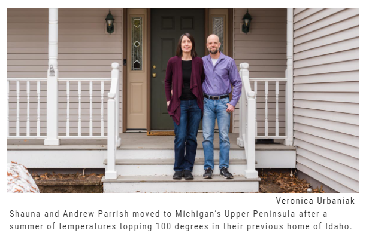
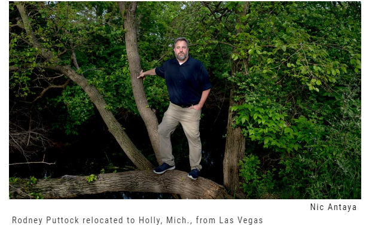

Climate Change And Search For Climate Security
Climate Security:
The climate change will affect the entire globe, but there is pocket of places where it could be more resilient to adverse weather. In the US, Midwest and the places near the great lakes are more resilient to climate change.
According to Climate Alpha, an AI-powered analytics platform that project the future proof real estate strategies, CEO Parag Khanna states that their model shows areas around the Great lakes can withstand the climate risk.
Climate Security would be one of the major factors in coming days to move to resilient state.
, Andrew and Shauna Parrish moved to Houghton in Michigan's western Upper Peninsula in late 2021 after enduring a month of 100-degree days last summer in Boise under the constant haze of forest fire smoke choking out the skies of Idaho.
Rodney Puttock picked up and left his hometown of Las Vegas in mid-2021 for the literal green pastures of Holly, Mich., where, unlike in Sin City, water is plentiful.

For Rodney Puttock, water—a shortage of it—was the prime motivation to leave Las Vegas where he grew up and relocate to Holly, a village between Detroit and Flint that is still rooted in its agricultural history.
"It's a big issue in Las Vegas, the place of my childhood," said the 44-year-old Puttock, who makes voiceovers for television and radio commercials and does veteran coordinator work for the American Legion and Veterans of Foreign Wars.
At the time Puttock and his wife moved to Michigan in mid-2021, the two reservoirs that supply Las Vegas were abnormally low. Lake Mead, the largest reservoir in the U.S., was filled to only 35% of capacity. It's since dropped to a record low 31% in March of this year, while Lake Powell is at less than one-fourth of its capacity.
But in Michigan, "there's water everywhere," Puttock said.
Puttock was amazed when he could purchase fresh produce along rural Michigan roadways.

Main Page